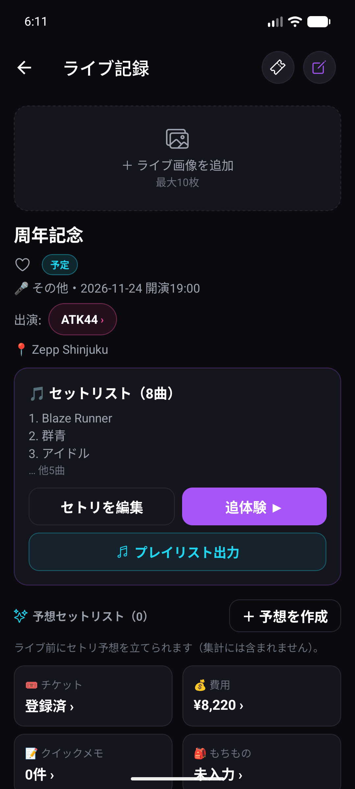
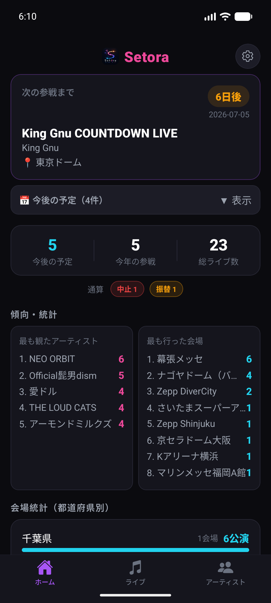
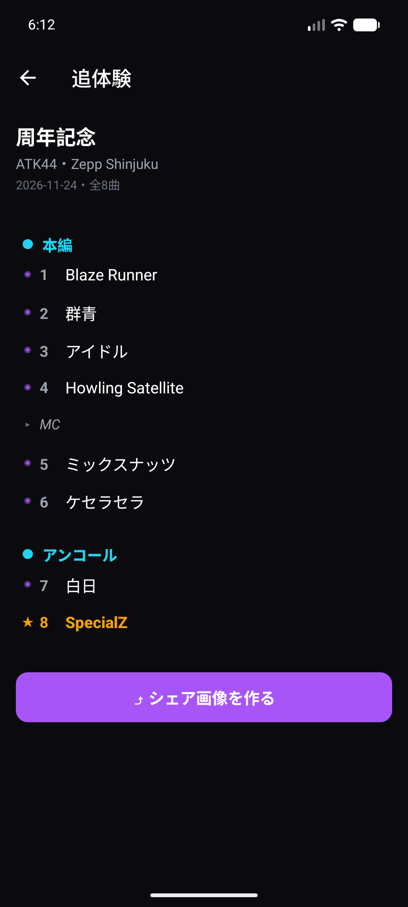
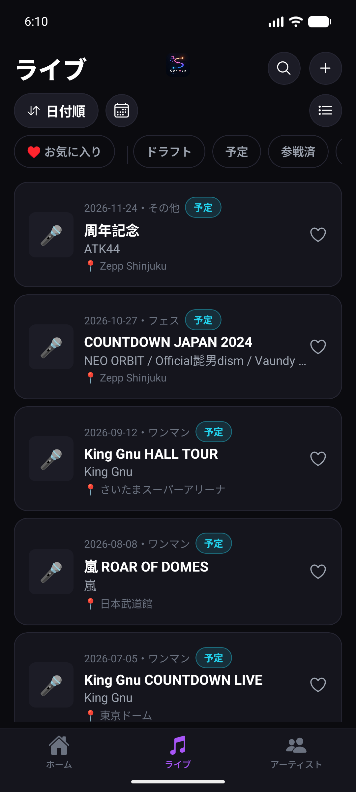
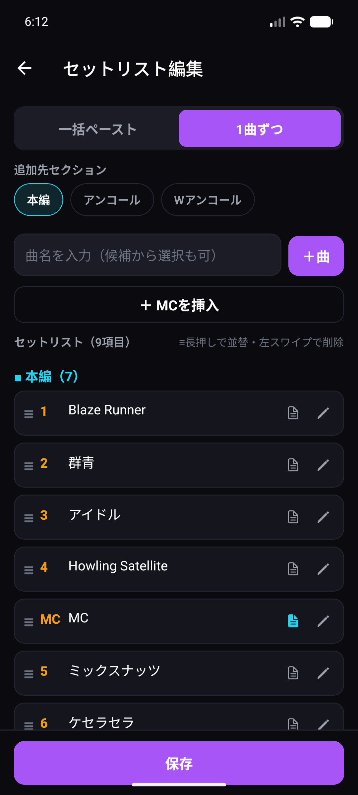
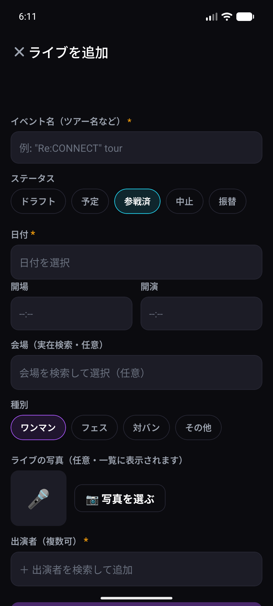
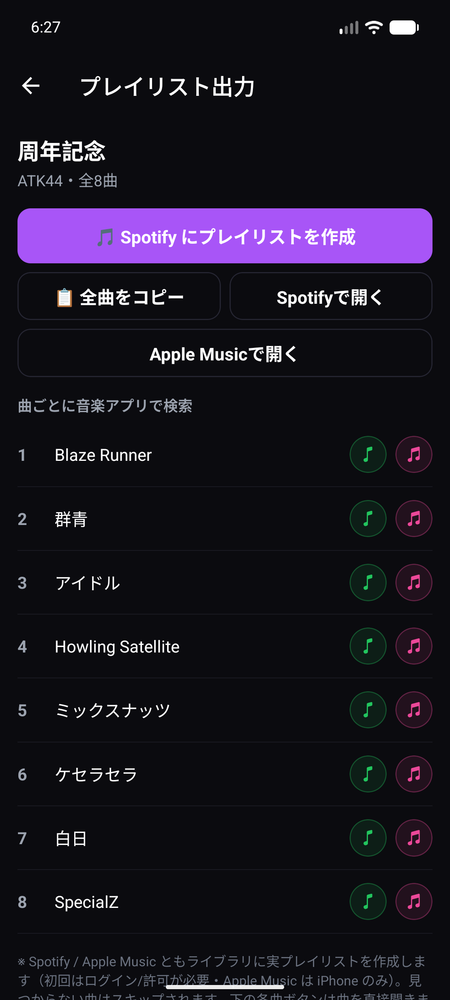

ADMIT ONE
SETORA
2026 · LIVE LOG
NO.0023 · #Setora
SET ＋ ERA
セトリは、ただの一覧じゃない。
その日の“体験”のデザイン。ライブの記録を、美しく残して追体験。



For Live Lovers
セトリはSNS、写真はカメラロール、チケットは財布の中。バラバラだと、あの日の感動を思い出せない。
終演後の高揚感のなかで記録しないと、セトリの順番もMCの内容もすぐに薄れてしまう。
写真・チケット・かかった費用・感想。バラバラに保存して、結局あとから探せない。
何公演も重ねるほど記憶は混ざる。きれいに振り返って、シェアもしたいのに手段がない。
素早く残して、美しく振り返り、何度でも追体験。セトリ・写真・感想・チケットまで、参戦のすべてを1つの記録に。Setora の機能をご紹介します。

イベント名・会場・出演者を選ぶだけ。セトリは一括ペーストでまとめて、曲名はサジェストから選ぶだけ。MC・アンコールもワンタップ。電車の中でも、余韻のまま残せます。


1曲目から本編、アンコール、そしてピーク曲まで。あの夜の流れを縦のタイムラインで追体験。スクロールするほど、記憶が鮮明に蘇る。Setora がいちばん大切にしている体験です。
記録したセトリから、Spotify / Apple Music に実プレイリストをワンタップで作成。曲ごとに音楽アプリで検索もできます。帰り道、もう一度あの音を。
※ 初回はログイン／許可が必要・Apple Music は iPhone のみ。見つからない曲はスキップされます。

最も観たアーティスト、よく行く会場、都道府県別の傾向。今年の参戦数も総ライブ数も一目で。次の参戦までのカウントダウンも。自分だけの参戦史が育ちます。
座席・料金・電子チケット画像、参戦費用の集計、ライブ中のクイックメモ、もちものチェックリスト。バラバラにならず、1つのライブ記録にすべてまとまります。
チケットも、セトリも、その日の感想も。座席・料金・電子/紙チケットの画像まで、半券のように大切な一日を Setora に残して追体験できます。
All Features
終演直後でも片手でサッと残せる入力動線。
縦の流れでセトリを美しく振り返る。
セトリをそのままSNS映えするカードに。
Spotify / Apple Music に実プレイリスト。
アーティスト・会場・都道府県の分析。
ライブ前にセトリ予想を立てて楽しむ。
リスト・グリッド・カレンダーで一覧。
アーティスト別の記録と統計をまとめて。
チケット・費用・クイックメモ・もちものリスト・iCloud バックアップなど、参戦をまるごと支える機能を多数搭載。
Pricing
基本機能はすべて無料。もっと深く記録したくなったら Pro へ。
セトリは、ただの一覧じゃない。その日の“体験”のデザイン。次の参戦から、Setora に残してみませんか。
iOS は TestFlight 配信中